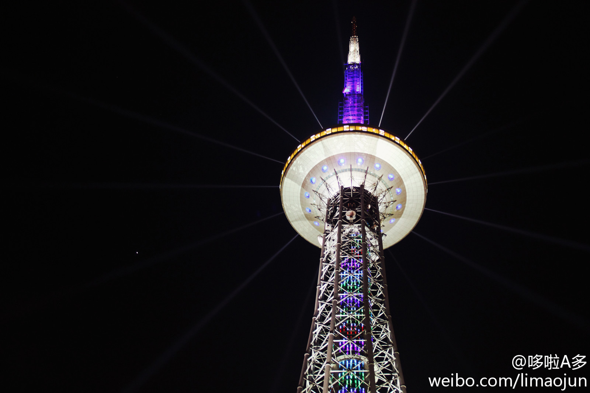

【揭开全民情感真相】1.影响夫妻感情的首要问题是金钱，达到30%；其次是婆媳问题 2.现今58%的家暴为女性实施，且方式非常多样化，冷暴力、掐大腿、刷爆信用卡等都在此之列 3.精神出轨者中女性要高出男性4个百分点；而身体出轨者中男性达61% 4.身体出轨者爱听《最炫民族风》.

李多多
2012-05-25
李多多
2012-05-25
一女干部与数男有性行为。纪委书记找其谈话。该女掀起裙子问，这东西是组织的吗？书记摇头！是你的吗？又摇头！是国有资产吗？还是摇头！女愤曰：你学习过《物权法》吗？我就不明白在这个向雷锋同志学习的大环境下，我自己的东西让别人用用难道也有错吗？书记沉默后蹦出一句，同志你辛苦了
李多多
2012-05-25
能拍出这效果是不是也得感谢哈尔滨满是灰尘的空气了？看不见星星，只能看见灯。。。记得小时候，大半夜没有路灯的地方只要有月光依然能看的很清楚……
- 